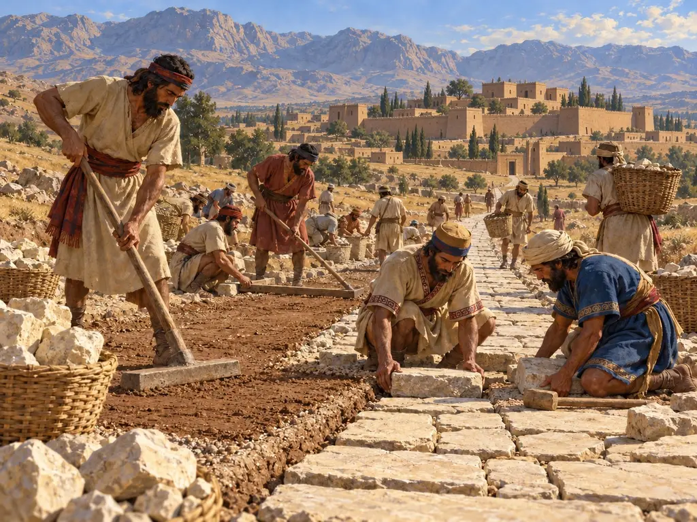
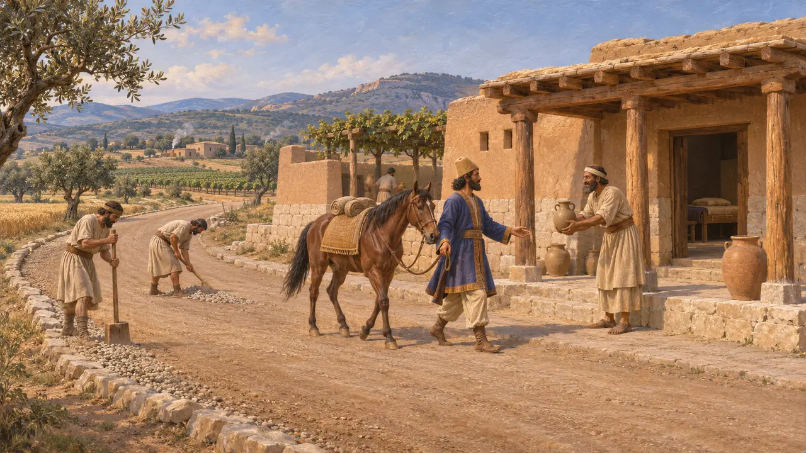
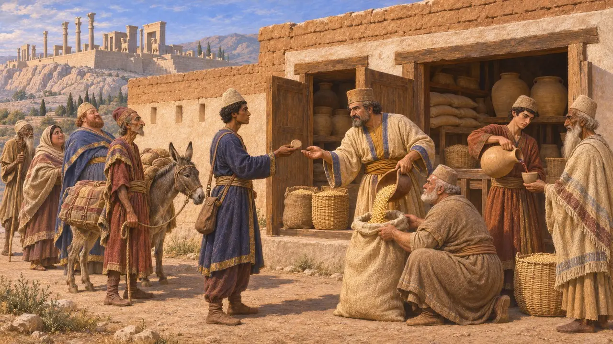
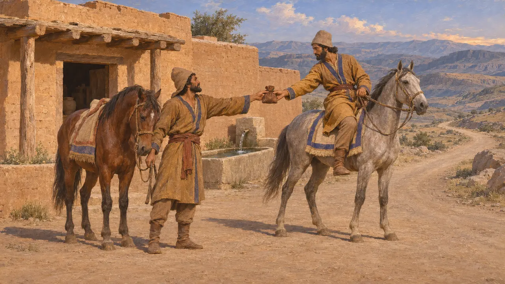
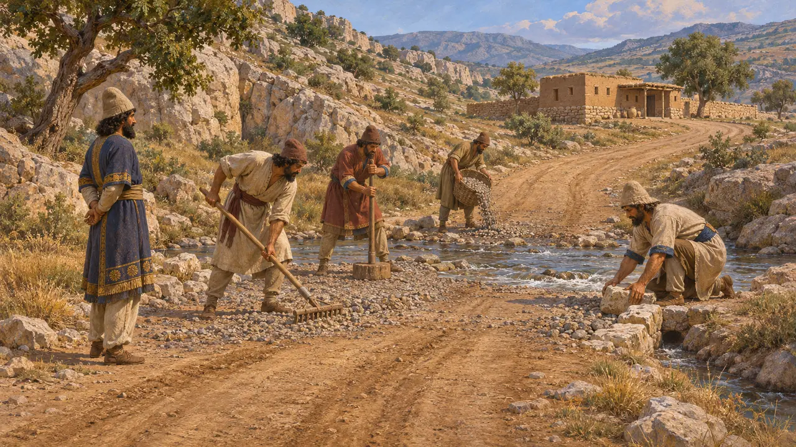

أشغال الطرق
الصيانة الملكية للطرق والمحطات في أرجاء الإمبراطورية، نحو 520-479 ق.م
تمثّل أشغال الطرق صيانةَ الملك للطرق والمحطات التي ربطت إمبراطوريته. ففي عهد داريوس، حملت الطرق الواصلة بين برسبوليس وسوسا وبين سارديس ومصر والهند الموظفين والسعاة والجنود والمؤن، وكانت تُموَّن من المخازن الملكية في المحطات على امتدادها. وقد أُعجب الكتّاب اليونانيون بهذا النظام، وتُظهر ألواح برسبوليس كيف كان يُدار يوماً بيوم.
في اللعبة: أمر دائم في صفحة الضرائب من السجل: يكلّف فضة كل شهر، وتحمل القوافل المزيد في كل زيارة. وفي هذا تبسيط للتاريخ، إذ كانت محطات الملك تصرف المؤن للمسافرين الرسميين المأذون لهم، لا لقوافل التجار.

هيرودوت عن الطريق من سارديس إلى سوسا
رواية قديمةيصف هيرودوت الطريق من سارديس إلى سوسا بأنه يمرّ عبر بلاد عامرة آمنة، تنتشر على طوله كله المحطات الملكية والنُّزُل الجيدة. ويعدّ 111 محطة على امتداد 450 فرسخًا، ويقدّر الرحلة بـ90 يومًا لمسافر يقطع 150 ستاديونًا في اليوم. ويضيف ثلاثة أيام أخرى من أفسس إلى سارديس. وهذه الأرقام من حسابه الخاص، والأرجح أنها تستند إلى رواة لا إلى قياس.
Herodotus 5.52-54

المحطات والحصص في الألواح
في السجلاتتسجّل ألواح التحصينات في برسبوليس، التي دُوّنت بين نحو 509 و493 ق.م، حبوبًا ودقيقًا وجعة ونبيذًا صُرفت للمسافرين على الطرق التي تربط برسبوليس وسوسا بسارديس وأراخوسيا والهند وولايات أخرى. وكانت جماعات المسافرين تحمل إذنًا مختومًا من الملك أو من ساتراب أو من مسؤول رفيع آخر، وكثيرًا ما كان يقودها دليل. وتُظهر الألواح المحطات مستودعاتٍ تزوّدها الإدارة الملكية لا نُزُلًا خاصة.
R. T. Hallock, Persepolis Fortification Tablets, 1969

تتابع السعاة الملكيين
رواية قديمةيروي هيرودوت كيف حُملت أنباء الهزيمة في سلاميس إلى فارس عبر سلسلة متناوبة من الخيّالة، إذ أُعدّ لكل مرحلةِ يومٍ رجلٌ وحصانٌ مستريحان. ويشبّه تسليم الرسالة من خيّال إلى آخر بسباق المشاعل اليوناني، ويذكر أن الفرس سمّوا هذا النظام «أنغاريون». ويقول إنه لا شيء من الفانين كان أسرع منهم، وإنه لا الطقس ولا الظلام كانا يوقفان الخيّالة.
Herodotus 8.98

كيف كانت الطرق
متنازع عليهيختلف المؤرخون في مقدار ما بناه الفرس وما ورثوه من طرق آشورية وعيلامية وليدية. والأرجح أن معظم الطرق كانت مسالك غير مرصوفة، حُسّنت عند الممرات الجبلية والمخاضات ومعابر الأنهار، وعُلّمت بالمحطات. ولا يزال الجدل قائمًا حول مسار طريق هيرودوت عبر الأناضول، أكان شمالًا بمحاذاة نهر هاليس أم جنوبًا عبر البوابات القيليقية، ولم يُحدَّد على الأرض بيقين إلا القليل من المحطات.
D. Graf, The Persian Royal Road System, 1994; P. Briant, From Cyrus to Alexander, 2002
قورش والمحطات الأولى
أسطورة لاحقةينسب زينوفون إلى قورش الكبير تأسيس محطات البريد بعد أن قاس المسافة التي يقطعها الحصان في يوم دون أن يُنهَك. غير أنه كتب بعد قورش بأكثر من قرن، في عمل صيغ على هيئة صورة للحاكم المثالي، لذا يحسن أن تُقرأ القصة مديحًا لا سجلًّا لمن ابتدأ هذا النظام.
Xenophon, Cyropaedia 8.6.17-18
المصادر
- Herodotus 5.52-54
- R. T. Hallock, Persepolis Fortification Tablets, 1969
- Herodotus 8.98
- P. Briant, From Cyrus to Alexander, 2002
- D. Graf, The Persian Royal Road System, 1994
- Xenophon, Cyropaedia 8.6.17-18